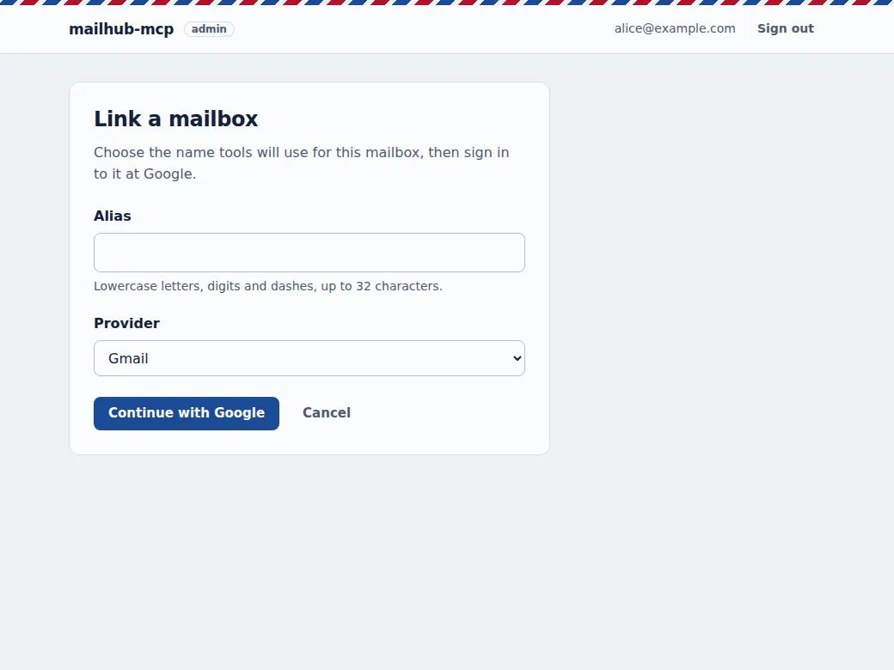

Install mailhub-mcp
Setup takes some care. The tutorial walks through every step; this is the outline.
You will need
- A Google account to create a Google Cloud project
- A Linux machine with Docker
- A public HTTPS address for it
mailhub-mcp is beta software. Pin a release with MAILHUB_VERSION so updates happen when you choose.
Install
-
Create a Google Cloud project
Enable the Gmail API and create one OAuth client of type Web application. Its authorized redirect URIs are the connector login,
<PUBLIC_BASE_URL>/auth/callback, plus two for the admin page:<PUBLIC_BASE_URL>/admin/auth/callback <PUBLIC_BASE_URL>/admin/oauth/callback -
Configure
.envCopy
.env.exampleand set your public URL, the Google client ID and secret, your own login inALLOWED_EMAILSand a signing key. -
Start the container
This pulls
ghcr.io/trainedloop/mailhub-mcpand listens on127.0.0.1:8742.docker compose up -d -
Put HTTPS in front
Any reverse proxy or tunnel with TLS at the root of a host name, such as
https://mail.example.com. The Tailscale Funnel example is a complete home-server setup, including a firewall that isolates the container. -
Link your mailboxes: open
/adminOpen the owner page on your own server, for example
https://mail.example.com/admin, and sign in with Google. Only a login inALLOWED_EMAILSgets in, the same rule as the connector. Linking a mailbox needs no command line and no restart.Choose an alias and a provider, then sign in to that mailbox at Google and consent. Repeat for each mailbox, each under its own alias.

Linking: an alias and a provider, then Google's own consent screen. Also on the page
- Every linked mailbox with its state, checked when the page loads.
- Re-link a mailbox whose credential expired.
- Remove a mailbox: the token is revoked at Google and the credential file is deleted.
- A re-link can only attach the same mailbox it replaces.
- Link, re-link and remove need a recent Google sign-in; otherwise the page sends you through Google first.
- Turn the page off with
ADMIN=off; its routes then answer 404.
Prefer the command line?
mailhub-authorizestill links mailboxes from your workstation. -
Add the connector
In claude.ai: Settings, Connectors, Add custom connector, with
https://mail.example.com/mcp. Sign in with the Google login fromALLOWED_EMAILS.
Works with MCP clients that support remote servers
What a client needs:
- a remote MCP server over streamable HTTP, at
https://mail.example.com/mcp; - OAuth 2.1 with PKCE and dynamic client registration;
- its OAuth callback URL added to
ALLOWED_REDIRECT_URISin.env(Claude's callbacks are there by default).
| Client | Status | Notes |
|---|---|---|
| Claude | Tested | As a custom connector in claude.ai, on the web and in the mobile app. |
| Online assistants with remote MCP support, such as ChatGPT | Should work, untested | Designed for any client that meets the requirements above. Add the client's callback URL and connect to /mcp. Reports are welcome. |
| Local models, through an MCP client that runs them on your machine | Should work, untested | Email content then never goes to an AI provider: the model, the client and the server are all yours. The server still needs internet access to reach Gmail; "offline" refers to the model. Loopback callbacks (http://localhost) are accepted. |
mailhub-mcp is an independent open-source project, not affiliated with Anthropic, OpenAI or Google. Setup for other clients: Connecting other MCP clients.
Built for inbox triage
MCP (Model Context Protocol) is how AI assistants call outside tools. mailhub-mcp is a remote MCP server: your assistant connects to it over HTTPS, you log in with Google, and the assistant gets a set of mail tools.
Ask what came in overnight, which senders flood your inbox, or to file last month's receipts under a label. It reads, reports and proposes; changes to many messages are previewed first and applied only when you confirm.
18 tools: 11 read-only, 7 that change something. Three ready-made prompts: daily_triage, clean_newsletters, organize_inbox.
- Read
search_emails,read_email,read_thread,inbox_overviewwith unread counts, categories and top senders,count_messagesto size a change before making it.- Organize
- Add or remove labels, archive, mark read, star, by message or by search query. Each batch is journaled and can be reverted.
- Draft
- Leave a reply draft in the thread for you to review and send yourself.
- Remember
- Triage preferences (important and ignored senders or keywords, time of the last triage) keep a daily routine consistent from one run to the next.
One server, every mailbox you own
Link your personal, work and side-project mailboxes to the same instance. Each gets a short alias, and the read tools search all of them at once by default, so one question covers every inbox.
If one mailbox fails (an expired credential, a rate limit), the others still answer: results come back with at most one error per account.
alice-personalGmailalice-workGoogle Workspacealice-side-projectGmail
Example aliases. Aliases are lowercase letters, digits and hyphens. Gmail is the provider available today; Outlook and IMAP are ideas on the roadmap.
Runs on your machine, in Docker
A home server, a small VPS or any Linux box with Docker. Your OAuth tokens, change journal and preferences live in folders on that machine. Apart from the Google APIs, the server sends nothing anywhere.
- Published image
ghcr.io/trainedloop/mailhub-mcpfor linux/amd64 and linux/arm64. Pin a release withMAILHUB_VERSIONso updates happen when you choose.- Locked-down container
- Read-only filesystem, all capabilities dropped, a memory limit, and the port bound to
127.0.0.1only. You put HTTPS in front of it. - Health
GET /healthfor Docker's health check, andmailhub-admin accountsto check that every linked mailbox still answers.
- Your MCP clientfor example claude.ai on the web or phone
- HTTPS + Google loginmailhub-mcp on your serverhttps://mail.example.com, tokens and journal on local disk
- Gmail APIYour mailboxesalice-personal, alice-work, alice-side-project
What the assistant reads becomes part of your conversation, so it is sent to the provider of the model you use. That is also why a model you run yourself is interesting; see clients.
What you can use it for
-
A daily triage report across every inbox
Mail since the last triage, grouped into needs attention, can wait and suspicious, with your important senders first. Triage only reads; it never changes mail.
Prompt
daily_triage -
Cleaning up newsletters
See the senders that fill your inbox, with their unsubscribe link for you to decide on, then archive their mail after reviewing a preview.
Prompt
clean_newsletters, toolsinbox_overview,modify_by_query -
Organizing a messy inbox with labels
The assistant proposes a few labels and which mail belongs in each. You approve, it applies. If the result is wrong, undo it.
Prompt
organize_inbox, toolscreate_label,undo_change,undo_since -
Scheduled triage routines
Run triage every morning as a scheduled task in your MCP client. Stored preferences and the time of the last run keep each report consistent.
Tools
get_preferences,set_preferences;TOOLS=read-onlyfor report-only routines -
Asking about your mail from your phone
"Did the plumber reply?" "Anything from school this week?" Ask from your MCP client's mobile app and get an answer that covers every account.
Tools
search_emails,read_thread
Contribute
Issues and pull requests
Bug reports, setup friction, reports from clients other than Claude, and fixes are welcome on GitHub issues and pull requests.
Add a mail provider
Providers implement a small MailProvider interface and pass a shared contract test suite. Outlook (Microsoft Graph) and IMAP are on the roadmap. Start with the architecture doc and its adding a provider section.
Security reports
Please report vulnerabilities privately through the repository's Security tab (private vulnerability reporting), not in a public issue. Prompt-injection and sanitizer bypasses are in scope. See SECURITY.md and the safety model.